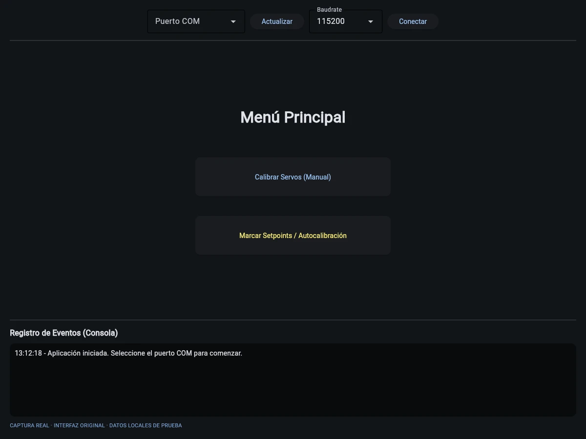

Saltar al contenido
Saltar al contenidoCalibración de servomotores
Interfaz de calibración que conecta controles de ángulo con un ESP32 mediante comunicación serial.

Ampliar imagenEl proyecto
Herramienta de calibración que conecta una interfaz Python con firmware de control mediante comunicación serial. Permite elegir el puerto y enviar posiciones angulares.
Ayuda a preparar y repetir posiciones o secuencias de calibración, con respuestas del dispositivo y validación de identificadores y ángulos. Las capturas muestran la interfaz de prueba, sin acreditar una validación física del hardware.
Funciones principales
- Selección y conexión de puertos seriales
- Control de ángulos y lectura de respuestas
- Guardado local de posiciones de referencia
- Secuencia de calibración desde la interfaz
- Firmware que valida identificadores y ángulos
Galería del proyecto
2 imágenes · en el orden seleccionado
Selecciona una imagen para ampliarla. Usa las flechas para recorrer la galería.


EN LA PRÁCTICA
Ajuste de posiciones
- 1
Seleccionar un puerto y conectar el ESP32.
- 2
Elegir un servo y enviar un ángulo dentro del rango válido.
- 3
Guardar posiciones de referencia y revisar las respuestas seriales.
No se ensayó el hardware; el recorrido explica los controles presentes.
Abre primero el gestor local con python tools/manage_media.py.